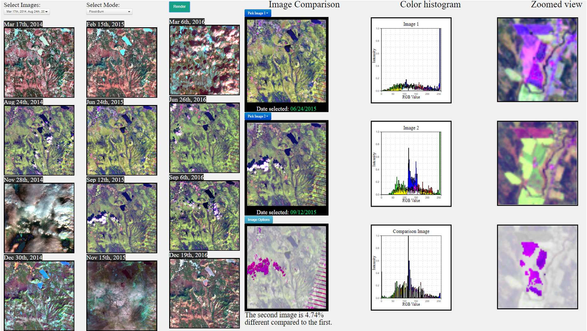

Projects
Fall 2017

Continuum: A Virtualized Attentive Environment for Amplified Collaboration
"Continuum is a cyberinfrastructure instrument that unifies high-resolution computer-enhanced group collaboration workspaces with arrays of ambient sensors, enabling users to collaborate with local and remote colleagues and their data more effectively by giving the room itself the ability to anticipate their needs, improve their interaction, and focus their time on discovery rather than the technology."
Summer 2017

Articulate: a Semi-automated System for Translating Natural Language Queries into Meaningful Visualizations
The Articulate project integrates natural language processing with gestures to create visualizations to allow people to explore data.
Summer 2017 (Cont...)
Visual Analytics Science and Technology Challenge 2017
"Our web-based image analysis tool for the VAST 2017 Mini- Challenge 3 combines small multiple views of satellite images, linked semantic zooming and image intensity histograms, along with filter controls. The resulting tool allow users to interactively analyze spatio-temporal changes in the preserve area."